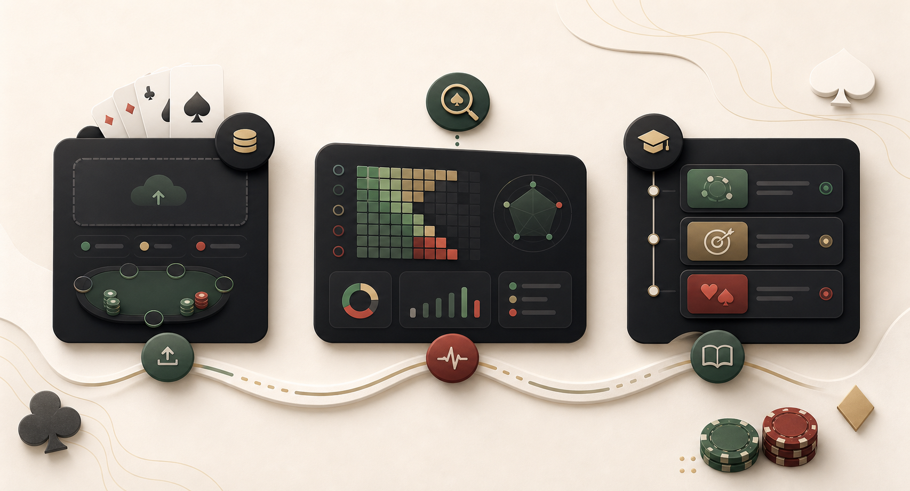

한국형 포커 코칭 사이트
검증된 레귤러와 코치를 등록하고 강의, 핸드 리뷰, 1:1 코칭을 상품화합니다.
Two Pair Poker Camp · Business Deck
한국형 포커 교육 플랫폼을 코치 친화적인 수익 구조로 설계합니다.
유튜브는 신뢰와 유입을 만들고, 웹사이트는 강의 판매와 1:1 코칭 연결을 담당합니다. 검증된 코치의 전문성과 회사의 콘텐츠 제작 역량을 결합하는 구조입니다.

단순한 포커 유튜브가 아니라, 콘텐츠 제작 역량을 활용해 코치와 수강생을 연결하는 교육 사업으로 확장합니다.
검증된 레귤러와 코치를 등록하고 강의, 핸드 리뷰, 1:1 코칭을 상품화합니다.
샘플 강의와 실전 핸드 리뷰로 코치의 실력과 설명 방식을 먼저 보여줍니다.
코치의 전문성을 살리고 회사가 커리큘럼, 편집, 판매 페이지를 보조합니다.
5:5, 6:4, 8:2를 제작 기여도에 따라 선택하는 구조로 코치 신뢰를 확보합니다.
수강생은 누구에게 배워야 할지 모르고, 코치는 콘텐츠 제작과 운영 부담 때문에 코칭을 안정적인 상품으로 만들기 어렵습니다.
초기에는 완전한 플랫폼보다 코치 프로필, 샘플 콘텐츠, 코칭 신청이 가능한 MVP에 집중합니다.

멤버십과 커뮤니티는 시장 반응을 확인한 뒤 확장하고, 먼저 코치 한 명의 성공 사례를 만드는 데 집중합니다.
프리플랍, 포스트플랍, MTT, ICM, 핸드 리뷰 등 주제별 강의 판매.
유입된 코칭생을 코치와 연결하고 예약, 결제, 후기 관리를 지원.
텍스트, 음성, 영상, 라이브 리뷰 형태로 낮은 진입장벽의 상품 구성.
월간 라이브 세미나, 그룹 코칭, Q&A, 커뮤니티를 중장기 상품으로 전개.
코치가 거절했던 이전 제안의 핵심 문제는 비용과 정산 기준의 불명확성이었습니다. 이 페이지가 코치 제안서의 신뢰 기반입니다.
코치는 플레이 경험과 설명 능력을 제공하고, 플랫폼은 제작, 유입, 판매, 정산을 맡습니다.
코칭 경험, 스토리텔링 능력, 재수강 경험이 있는 코치를 첫 파트너로 검증합니다.
기획, 촬영, 편집, 썸네일, 판매 페이지를 플랫폼이 지원합니다.
강의와 코칭 상품을 통해 플레이 외 안정적인 추가 수익 루트를 만듭니다.
유튜브 샘플 콘텐츠와 코치 프로필로 교육자로서의 신뢰를 쌓습니다.
회사가 모든 내용을 만들면 코치의 색이 사라집니다. 반대로 코치가 모든 것을 만들면 제작 부담이 커집니다.
회사 기획과 대본을 바탕으로 코치는 전달과 리뷰에 집중합니다.
코치의 전문성과 회사의 제작 역량을 함께 반영하는 기본 추천 모델입니다.
코치가 커리큘럼과 핵심 내용을 직접 만들고 플랫폼은 판매와 제작 보조를 맡습니다.
다수 코치와 복잡한 기능보다, 한 명의 코치와 하나의 강의/코칭 상품으로 전환 가능성을 확인합니다.
법무, 결제, 세무 검토는 실제 판매 전 별도 확인이 필요합니다. 현재 단계에서는 코치 피드백과 시장 반응 검증이 우선입니다.
브랜드명, 수익분배표, 코치 제안서, 홈페이지 샘플 구조 확정.
플레이 녹화본, 핸드 자료, 코치 프로필, 유튜브 콘텐츠 기획 확보.
샘플 영상 편집, 강의 상세 페이지, 코칭 신청 폼, 가격 조건 보완.
초기 코치 후보 제안, 유튜브 샘플 업로드, 코칭 신청 전환 가능성 확인.
첫 코치, 첫 유료 상품, 첫 유튜브 콘텐츠 주제, MVP 결제 방식, 코치별 권리 조건.